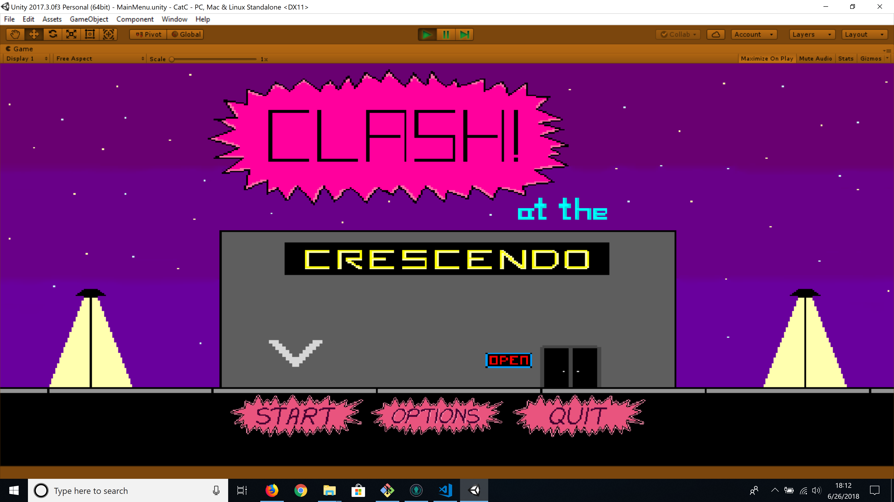
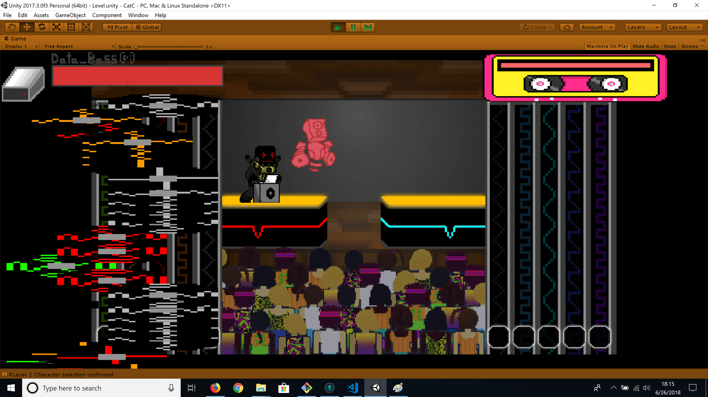

I and the rest of the Game Analysis and Design Interest Group collaborated to make this game during the Fall 2017 Semester.
This game is a 2 player rythm fighting game in which the player must deplete their opponent's health bar by means of attacking and moving at the beat of a song.
My contribution:As a member of the programming team I implemented the character selection menu, then assisted the art team in integrating the assets they had produced.